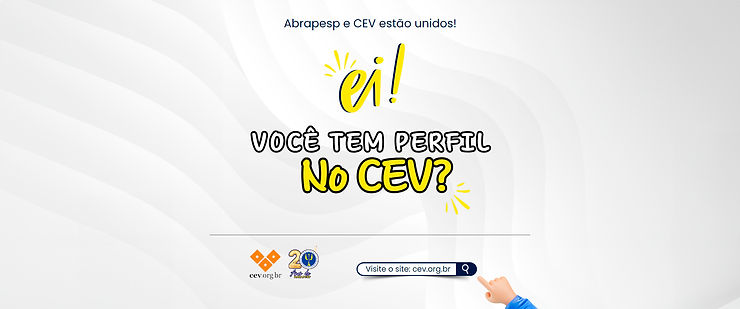

A Associação está no CEV, O maior portal de Gestão do Conhecimento para uma Comunidade de Pesquisadores, Professores e Estudantes em Educação Física, Esportes e Lazer.
Veja o comunicado da atual presidente Marina Gusson:
Fonte: Vídeo postado no canal de Youtube do “CEV – Centro Esportivo Virtual”, no dia 11/06/2024, pelo link: https://youtu.be/PTaalpbnAZQ?si=u71M-76OayP1TosW, acessível também pela página do CEV: https://cev.org.br/biblioteca/abrapesp-associacao-brasileira-de-psicologia-do-esporte/
O que é o CEV?
O CEV (Centro Esportivo Virtual) é uma ONG que tem a missão de ser uma espécie de ágora da Educação Física, Esportes e Lazer. Um portal de gestão do conhecimento, onde notícias são postadas, discussões ocorrem nas comunidades e um acervo digital está disponível para todos os inscritos.
Com mais de 40 mil membros, 110 comunidades e uma biblioteca com mais de 90 mil publicações, o CEV é fonte de informação e interação para esportistas, estudantes, pesquisadores e profissionais da área. Agora também, contando com mais um parceiro de peso da Psicologia do Esporte, a ABRAPESP.
Conhecendo a história do CEV
O CEV foi criado no Núcleo de Informática Biomédica da Unicamp em 1996, como parte de um trabalho de doutorado. Desde então, ele tem crescido e estabelecido parcerias significativas, como com o Ministério do Esporte, o Conselho Federal de Educação Física e o SESC-SP.
Em sua trajetória, o CEV tem marcado presença em momentos importantes da história da Educação Física, Esportes e Lazer no Brasil. Participou da criação do Colégio Brasileiro de Ciências do Esporte e do processo que levou à criação do Conselho Federal de Educação Física. Além disso, o CEV tem se mantido atualizado e atuante, participando de esforços para preparação e atualização profissional na área.
Como acessar o CEV?
Acessar o CEV é simples e gratuito. Você pode criar o seu perfil através do site: https://cev.org.br/ . Com a inscrição, você terá acesso a todas as publicações, poderá participar das discussões e terá a oportunidade de interagir com especialistas e outros membros da comunidade. Além disso, você poderá contribuir com o CEV, comentando, sugerindo ou acrescentando informações.
Gostou? Então crie o seu perfil de forma rápida e gratuita: